Die Sinne eines Computers
Sensoren sind die Ohren, Augen und Nase eines Computers. Es gibt kaum eine physikalische Größe, die sicher vor ihnen ist. In der heutigen Technik sind sie das A und O der Computersteuerung.
Computer können hören, sehen und riechen! Man ist häufig nur etwas erstaunt, wie eine Handvoll Chips und ein paar Drähte das fertigbringen. Das Zauberwort heißt »Sensoren«. Im folgenden wollen wir Ihnen die wichtigsten vorstellen.
Sensoren sind Bauelemente die durch Einfluß von magnetischen, elektrischen oder mechanischen Größen ihre elektrischen Eigenschaften ändern oder Energien in Ströme umwandeln. Sensoren, die ihre elektrischen Eigenschaften (meist den Widerstand) ändern, werden als passiv bezeichnet. Aktive Sensoren indessen wandeln chemische, elektromagnetische, thermische und mechanische Energie in elektrischen Strom, der sich sofort messen läßt.
Die einfachsten Sensoren sind die Passiven. Sie ändern einfach ihren Gleichstromwiderstand. Ein Sensor den fast jeder kennt, wird zur Längen- und Winkelmessung verwendet: Das Schiebe- oder Drehpotentiometer, auch kurz Poti genannt. Am einfachsten läßt sich das Schiebepotentiometer (Schieberegler) erklären.
Potentiometer
Auf einer Bahn befindet sich eine Schicht aus Kohle über die ein Schleifer hin und her geschoben werden kann (Bild 1). Mit einer Hilfsstromquelle kann die Widerstandsänderung in eine Spannungsänderung umgewandelt werden. Schiebepotentiometer gibt es in Längen bis zu einem Meter. Meist werden sie für Wegmessungen an Maschinen verwendet. Drehpotentiometer werden für Winkelmessungen hergenommen.
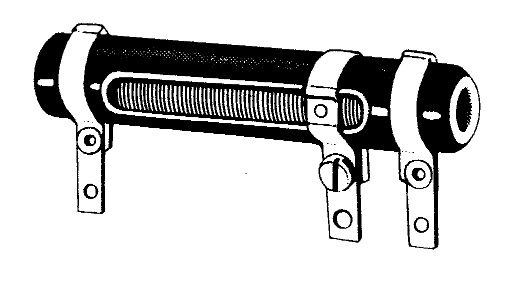
Wenn Elektronik Ihr Hobby ist, wissen Sie bestimmt, daß normale Kohleschichtpotis alles andere als genau sind. Aus diesem Grund findet man in Meßpotentiometer auch keine Kohleschicht, sondern eine Schicht aus speziellem Leitplastik, das wesentlich abriebfester ist. Die Widerstandsänderung durch Abrieb kann dadurch fast vernachlässigt werden.
Durch Widerstandsänderungen können nicht nur leicht Wegstrecken gemessen werden, sondern auch Temperaturen. Möglich wird das mit einem Metallthermometer (Bild 2). Wie Sie vielleicht noch aus Ihrem Physikunterricht wissen, ändern Metalle ihre Leitfähigkeit mit der Temperatur. Je größer die Temperatur, um so schlechter leiten sie. Ein Metallthermometer läßt sich dadurch leicht beschreiben. Man wickelt auf ein Glasröhrchen eine Lage Platindraht und schon hat man einen Thermofühler für einen Temperaturbereich von -220°C bis +1000°C. Aber ganz so einfach ist nun auch nicht. Denn die Zuleitungen zur Platinwendel ändern auch ihren Widerstand. Zusätzlich muß der Meßstrom durch die Platinwendel sehr klein sein, damit der Platindraht nicht zum »Heizdraht« wird. Wenn nämlich der fließende Strom den Platindraht geringfügig erwärmt, wird das Meßergebnis total verfälscht. Aus diesen Gründen hat man sich etwas anderes überlegt, das in der Praxis einfacher handzuhaben ist: Das Halbleiterthermometer.
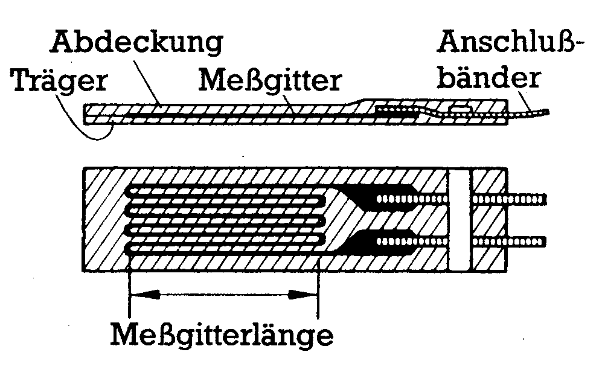
Es gibt zwei verschiedene Arten von Halbleiterthermometern: Kalt- und Heißleiter. Kaltleiter haben einen positiven Termperaturkoeffizieten (PTC, Widerstand steigt mit zunehmender Temperatur), Heißleiter einen negativen (NTC, Widerstand sinkt mit steigender Temperatur). Der Vorteil der Halbleiterthermometer ist ihr Temperaturbeiwert, also die Größe der Widerstandsänderung pro Grad Celsius. Die Widerstandsänderungen bei Heiß- und Kaltleitern sind wesentlich größer als bei den Metallthermometern. Eine Temperaturdifferenz ist deshalb leichter zu messen. Außerdem ist die Masse kleiner als die der Metallthermometer. Das bedeutet, daß Temperaturänderungen schnell gemessen werden können. Das kleine Gehäuse der Halbleiterthermometer nimmt schnell die Temperatur des Meßobjektes an, ohne dessen Temperatur stark zu beeinflussen. Der Nachteil ist, daß die Widerstandsänderung nicht linear zur Temperaturänderung ist. Bei den aktiven Sensoren werden Sie einen Thermofühler kennenlernen, der die Vorteile des Metall- und des Halbleiterthermometers in sich vereinigt.
Materialprüfung
In der Materialprüfung werden häufig Belastungen an statischen Objekten wie Brückenträgern oder anderen Stahlkonstruktionen gemessen. In der Regel gibt es hier Zug- und Druckkräfte zu messen, das Einsatzgebiet von Dehnungsmeßstreifen (DMS). Die Wirkungsweise eines DMS ist schnell erklärt: Durch Dehnung eines Drahtes wird dessen Querschnitt verkleinert, was eine Widerstandserhöhung bewirkt. Längenänderungen von 0,1 bis 10 Mikrometer können damit gemesssen werden. Bild 3 zeigt den schematischen Aufbau eines Folien-Dehnungsmeßstreifens. Ähnlich der Herstellung von Platinen, wird ein metallisches Meßraster auf eine Folie aufgebracht, die leicht auf das Meßobjekt geklebt werden kann. Der Querschnitt der in »Schlangenlinien« verlegten Meßleitung ist in Längsrichtung kleiner als in den Kurven. Dadurch wird der DMS unempfindlich gegen etwaige Dehnungen in Querrichtung. Zur Messung von Dehnungen in verschiedene Richtungen gibt es spezielle DMS, deren Meßgitter in verschiedene Richtungen verlaufen (Bild 4). Als Werkstoff dient meist eine Konstantan-Nickel- oder Chrom-Nickel-Legierung. Ein Dehnungsmeßstreifen kann auch wieder gestaucht werden, wenn er gestreckt wurde.
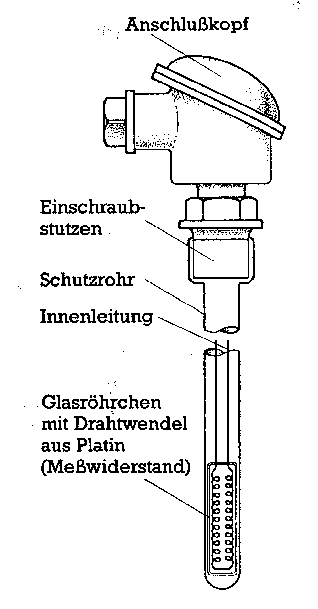
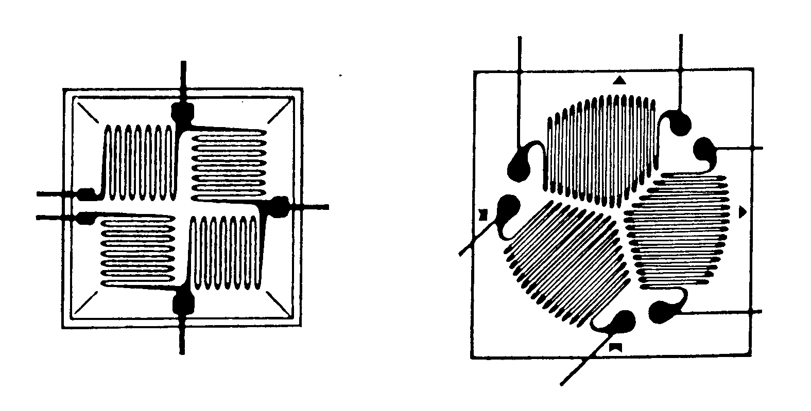
DMS finden sich auch in sogenannten Kraftmeßdosen (Bild 5), die an Pressen, Walzen und in elektronischen Waagen zu finden sind. Kräfte bis zu 1000 KN können damit gemessen werden.
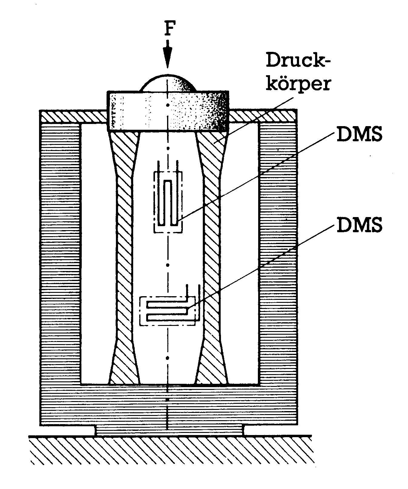
Es gibt noch eine andere Art von Kraftmeßdosen, die kapazitive Effekte ausnutzen. Bild 6 zeigt eine solche kapazitive Druckmeßdose. Durch Eindrücken der Membran, wird die Kapazität der Dose verändert. Vergleichen läßt sich das mit einem Kondensator, dessen Plattenabstand variabel ist. Gemessen wird die Kapazitätsänderung mit einer Wechselstrommeßbrücke, in der die Druckmeßdose Teil eines Schwingkreises ist. Ändert sich die Kapazität, wird der Schwingkreis verstimmt. Indem man den Schwingkreis mit einem RC-Glied wieder auf die Resonanzfrequenz abstimmt, kann man die Kapazitätsänderung bestimmen.
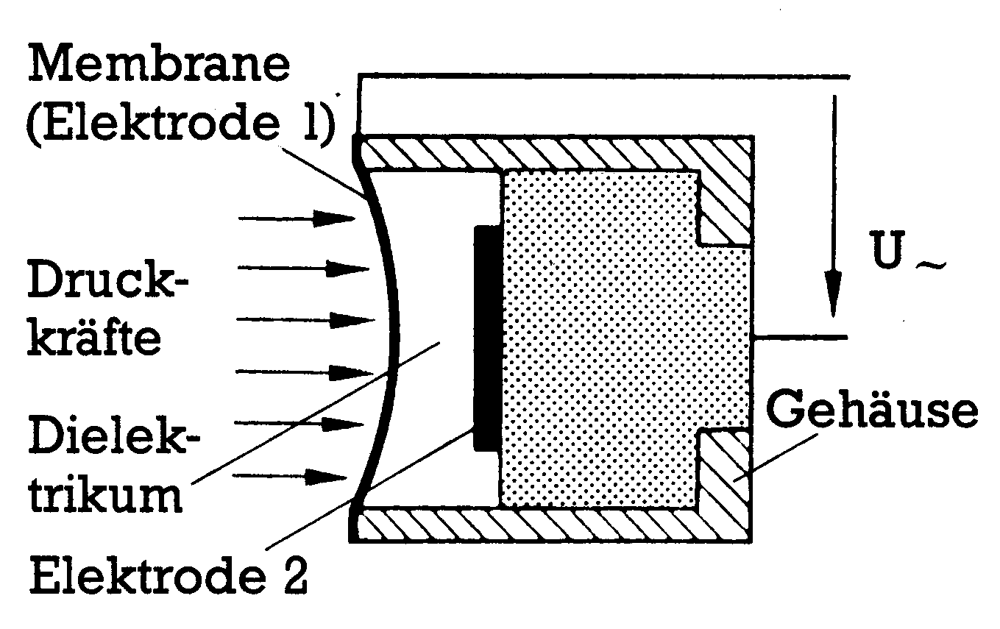
Auch kapazitive Füllhöhenmesser für elektrisch nicht leitende Flüssigkeiten funktionieren nach diesem Prinzip (Bild 7). Behälterwand und Mittelelektrode bilden einen Kondensator. Die Flüssigkeit ist das Dielektrikum (= Medium zwischen Kondensatorplatten). Da der kapazitive Widerstand eines Kondensators auch von der Art des Dielektrikums abhängt, kann die Füllhöhe relativ leicht bestimmt werden. Ist der Behälter voll, ist über die ganze Höhe die Flüssigkeit das Dielektrikum. Ist der Behälter nur halbvoll, ist zur Hälfte die Flüssigkeit und zur Hälfte Luft das Dielektrikum. Der volle Behälter hat dadurch eine kleineren kapazitiven Widerstand als der halbvolle, da Luft nur ein schlechtes Dielektrikum ist. Müssen leitende Flüssigkeiten gemessen werden, isoliert man einfach die Elektrode und verwendet die Flüssigkeit selbst als Kondensatorplatte.
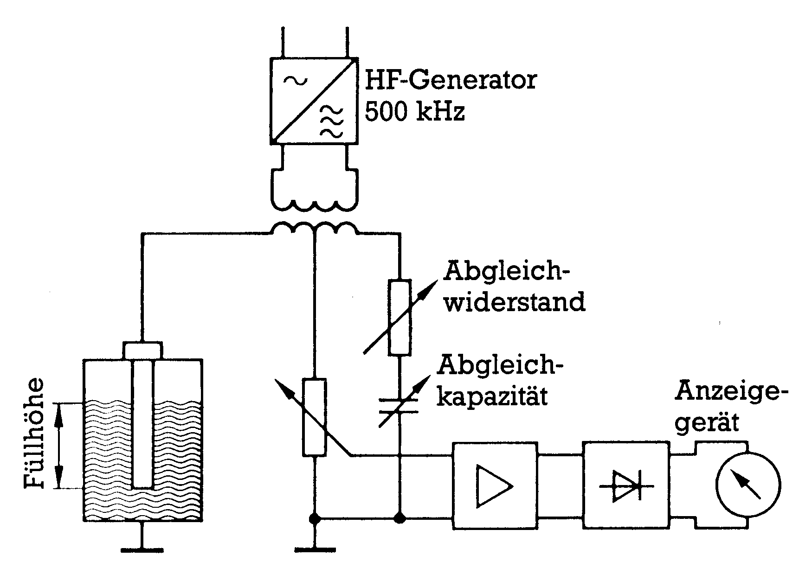
Mengenmessung
Hat ihr Wagen eine L-Jetronic als Einspritzanlage, dann wissen Sie auch wie wichtig es sein kann Durchflußmengen zu messen. L-Jetronic steht frei übersetzt für Luftmengen-Messung. Die Wirkungsweise ist wieder sehr leicht zu verstehen. Durch Anblasen mit Luft kann man einen Gegenstand schneller abkühlen als ohne Anblasen. Das ist der ganze Trick. Im Ansaugkanal einer L-Jetronic befindet sich eine Hitzdrahtsonde (Bild 8), an der die Ansaugluft vorbeiströmt. Die Sonde wird nun über eine konstante Stromquelle aufgeheizt. Saugt nun der Motor Luft an, wird die Sonde gekühlt und verändert dadurch ihren Widerstand. Sie wissen ja: kalte Metalle haben einen kleineren Widerstand als heiße. Je mehr Luft angesaugt wird, um so kleiner wird der Widerstand der Sonde. Aus dem Widerstand der Sonde läßt sich dann die angesaugte Luftmenge bestimmen und die benötigte Kraftstoffmenge errechnen.
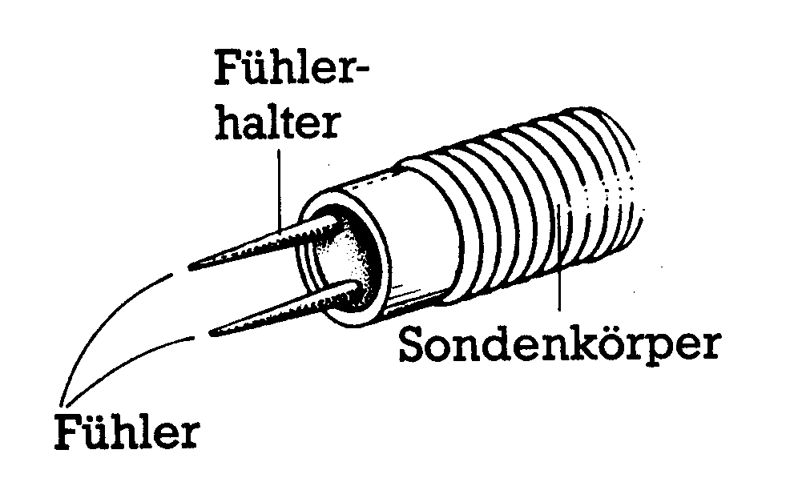
Die Hitzdrahtsonde kann aus einem dünnen Wolframdraht, der an den Enden auf einen Nickelfühlerhalter geschweißt wird, bestehen.
Sehr genau können Durchflußmengen von leitenden Flüssigkeiten auch induktiv gemessen werden (Bild 9). Solche magnetischen Durchflußsensoren bestehen aus einem isolierten Rohr, das sich in einem Magneten befindet. Wenn nun die leitende Flüssigkeit durch das Rohr strömt, wird in der Flüssigkeit eine Spannung induziert, die von quer zur Strömungsrichtung angebrachten Elektroden abgenommen werden kann (Hall-Effekt). Die Spannung steht im Verhältnis zur mittleren Strömungsgeschwindigkeit der Ionen und damit zur Durchflußgeschwindigkeit. Normalerweise werden die Sensoren, nicht wie in der Zeichnung vereinfacht, mit Gleichstrom betrieben, sondern mit Wechselspannung. So können die Spannungen leichter verstärkt werden.
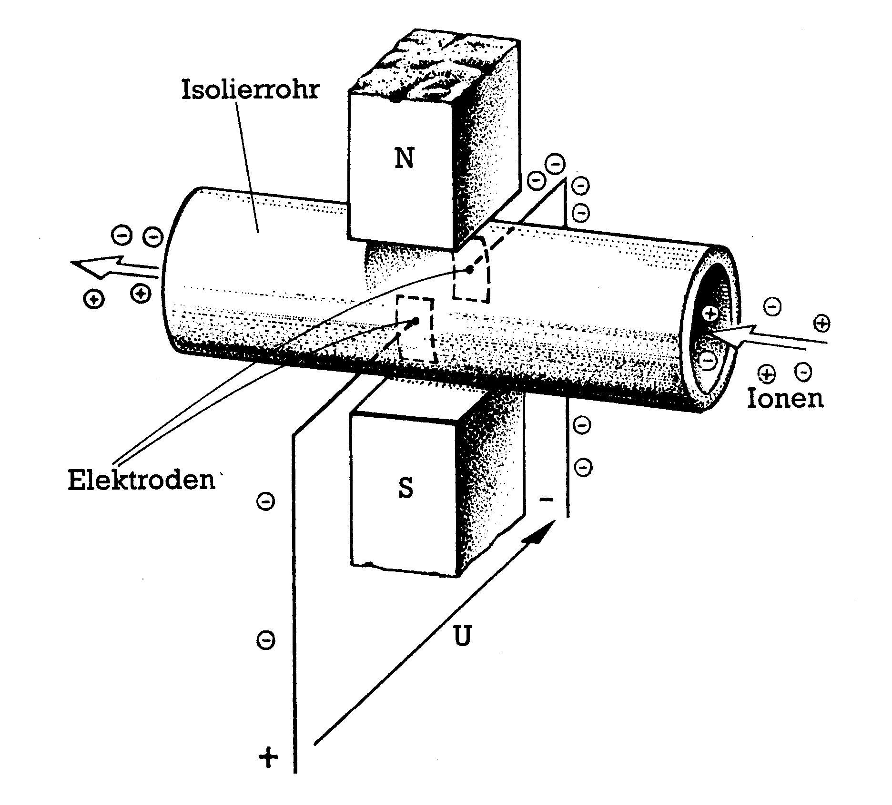
Längenmessung
Passive Sensoren funktionieren nicht nur durch Veränderung von Widerständen. Auch magnetische Effekte können zur Meßdatenerfassung eingesetzt werden. Ein noch recht einfaches Beispiel dazu ist der Tauchankersensor (Bilder 10 und 11), der für Wegmessungen von 50 bis 1500 mm eingesetzt wird. Die Hobbyelektroniker unter Ihnen werden schon anhand des Schaltbildes die Funktion erkennen: Ein Rundstab aus Weicheisen wird in ein Rohr mit einer Referenz- und einer Meßwicklung geschoben, wodurch sich natürlich die Induktivität (magnetische Leitfähigkeit) des Rohres verändert. Wird an die Referenzspule eine Wechselspannung angelegt, induziert diese in der Meßwicklung eine Spannung, deren Höhe davon abhängt, wie tief das Rundeisen in der Spule steckt. Häufig verwendet man Tauchankersensoren für Füllstandsanzeigen.
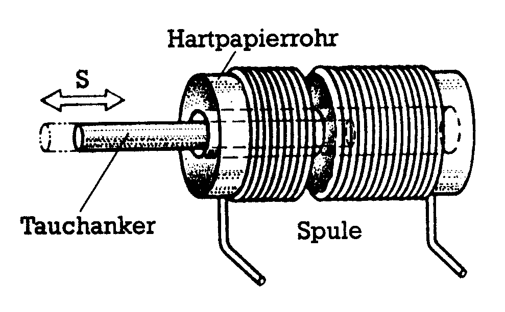
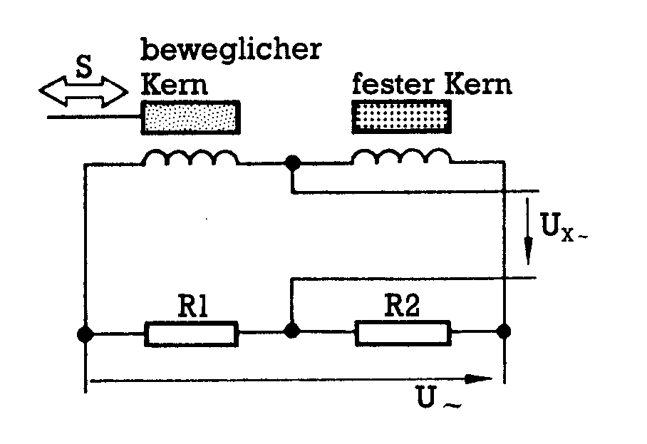
Aktive Thermofühler
Metallthermometer, Heiß- und Kaltleiter haben wie schon beschrieben Nachteile, die es beim Thermoelement nicht gibt. Thermoelemente arbeiten sehr genau und linear über einen großen Temperaturbereich hinweg. Diese Sensoren nutzen einen eigenartigen Effekt aus. Verschweißt man beispielsweise einen Konstantan- mit einem Kupferdraht, so kann man eine Spannung an den Drahtenden messen (Bilder 12 und 13). Die Spannung ist proportional zur Temperatur der Verbindungsstelle. Man mißt normalerweise die Spannungsdifferenz zwischen zwei Thermoelementen, von denen eines auf eine Referenztemperatur gebracht wird und das andere als Meßfühler dient. Hat das Meßelement die Temperatur des Referenzelementes, kompensieren sich die Thermospannungen gegenseitig. Erst bei einem Temperaturunterschied läßt sich eine Thermospannung messen. So läßt sich das Meßelement leicht eichen.
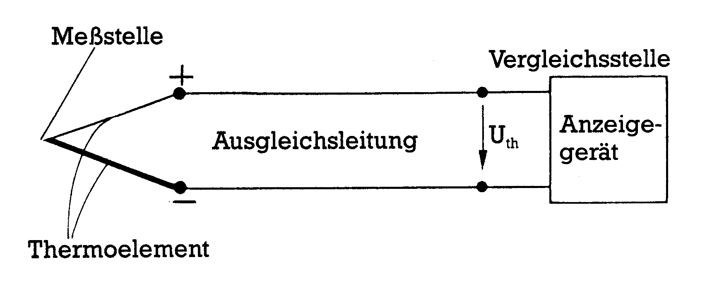
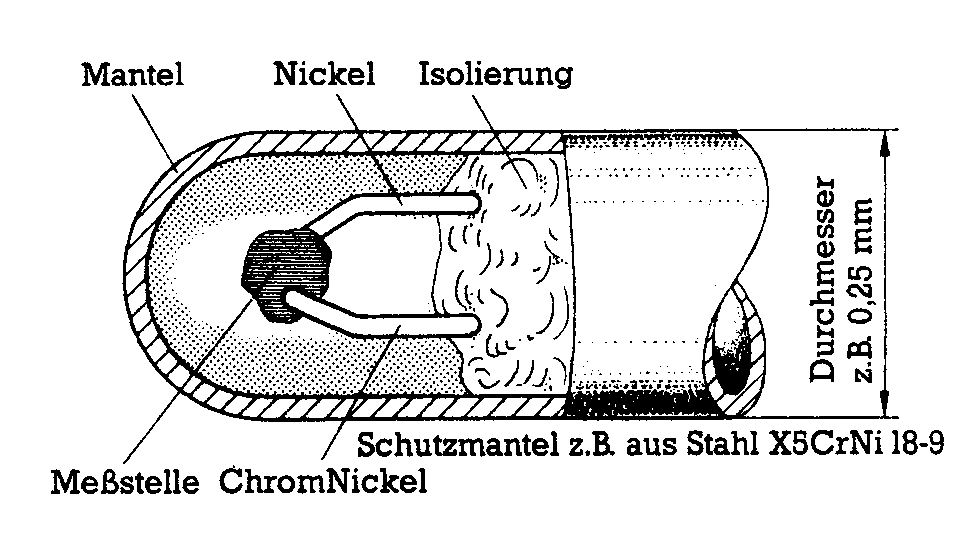
Strom durch Druck
Kräfte können nicht nur durch Druckdosen, sondern aktiv auch durch piezoelektrische Sensoren gemessen werden. Solche Sensoren erzeugen bei Belastung durch Druck-, Schub- und Zugkräfte eine elektrische Spannung. Denn bei Veränderung der Form tritt an den Kristallseiten die parallel zur Kraftrichtung sind, eine Ladungstrennung auf. Auf der einen Seite sind Elektronen im Überschuß, auf der anderen herrscht Elektronenmangel.
Bestimmt kennen Sie diesen Effekt von einigen Feuerzeugen her. Mit dem Taster drücken Sie den Piezokristall so lange zusammen bis eine »Knackfroschmechanik« den Druck schlagartig vom Kristall wegnimmt. Der Kristall federt in seine Ruhelage zurück und erzeugt dabei einen kurzen Stromimpuls. Sichtbar am Funken, der zwischen den Zündelektroden überspringt. Umgekehrt funktioniert ein Piezolautsprecher. Legt man an einen Piezokristall eine Wechselspannung an, tritt eine periodische Verformung auf, die hörbar sein kann.
In Sensoren werden meistens Blei-Zirkonat-Titanat-Kristalle verwendet. Diese sind wesentlich effektiver als die bekannten Quarz-Kristalle. Der Wirkungsgrad liegt bei etwa 50 Prozent.
Mit piezoelektrischen Aufnehmern können allerdings nur dynamische Systeme gemessen werden. Denn sobald eine konstante Kraft auf den Kristall einwirkt, tritt auch keine Ladungstrennung im Kristall mehr auf.
Geschwindigkeits- und Drehzahlmessung
Geschwindigkeiten und Drehzahlen werden mit Tachogeneratoren gemessen. Prinzipiell ist ein Tachogenerator nichts anderes als ein Stromgenerator, der eine um so größere Spannung erzeugt, je schneller er sich dreht. Aus der Höhe der Spannung läßt sich leicht die Drehzahl eines Motors ermitteln.
Beschleunigungen können nach verschiedenen Verfahren gemessen werden. Alle haben jedoch eines gemeinsam: es wird die Kraft gemessen, welche eine schwingend aufgehängte »träge Masse« auf den Aufhängungspunkt ausübt. Die Kraftmessung erfolgt meist piezoelektisch oder über eine Druckdose.
Was mit einem Heimcomputer einfach gemessen werden kann, ist neben Temperaturen auch Licht. Das bekannteste und älteste Bauelement, das auf Licht reagiert, ist der Fotowiderstand. Er besteht aus einem Halbleitermaterial, dessen Elektronen bei Lichteinfall frei beweglich werden und somit steigt die Leitfähigkeit. Durch geeignete Wahl des Halbleitermaterials kann man solche Fotowiderstände für verschiedene Spektralbereiche empfindlich machen (sensibilisieren). Die Widerstandsänderung von LDRs (Light Dependend Resistor) ist annähernd logarithmisch zur einfallenden Lichtstärke. Der Nachteil der LDRs sind ihre lange Ansprechzeit. Es dauert eine Zeit lang, bis eine Lichtänderung eine Widerstandsänderung hervorruft. Nicht so bei der Fotodiode, die sofort anspricht. Momentan ist sie der schnellste lichtempfindliche Schalter. Die Reaktionszeiten bewegen sich im Zeitraum von einer Mikrosekunde. Ein Fotowiderstand braucht immerhin bis zu 20 Millisekunden, um sich auf eine Lichtänderung einzustellen. Eine Fotodiode wird in Sperrichtung betrieben und hat ihre maximale Empfindlichkeit im dunkelroten Licht. Das dritte Bauteil, das auf Licht reagiert, ist der Fototransistor. Er verbindet die Vorteile von Fotowiderstand und Diode. Die Schaltzeiten bewegen sich in ähnlichen Bereichen wie die der Fotodiode und die spektrale Empfindlichkeit ist über einen weiten Bereich gestreckt.
Riechen kann er auch noch!
Es gibt auch spezielle Gassensoren, die auf eine Vielzahl von Gasen ansprechen, allerdings braucht jede Gassorte einen eigenen Sensor. Diese Sensoren bestehen aus einer Halbleiterpille, die durch eine Heizwendel erwärmt wird. Treffen nun Moleküle einer bestimmten Gassorte auf die Pille, ändert sich deren Widerstandswert. Es gibt beispielsweise Gassensoren, die auf giftiges Kohlenmonoxid oder auf Chlorwasserstoffe reagieren. Ein Gag sind noch die Alkoholsensoren. Je stärker die »Fahne«, desto kleiner der Widerstand.
Wie Sie sehen, es gibt kaum eine Größe, die nicht mit einem Computer über einen A/D-Wandler erfaßt werden könnte. Viele der hier genannten Sensoren sind allerdings für Heimcomputer zu teuer. Die Preise für Foliendehnungsmeßstreifen beginnen ab etwa 30 Mark. Sehr teuer wird es, wenn die Effekte nur sehr klein sind. Denn dann werden hochwertige Verstärker nötig, die viel Geld kosten. Billig sind eigentlich nur Heißleiter, NTCs, und Fotowiderstände, Fotodioden und Fototransistoren. Eventuell noch Thermoelemente. Zum Teil gibt es diese Bauteile schon für weniger als eine Mark in Elektronikgeschäften.
(hm)Info: Als Quelle zu diesem Thema diente das Buch »Fachkunde für Informationselektronik«, das im Europa-Lehrmittel-Verlag erschienen ist. Der Preis beträgt 45 Mark.